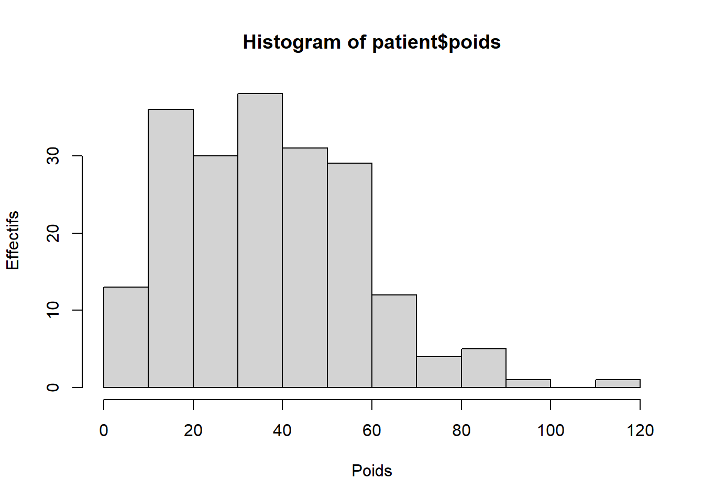
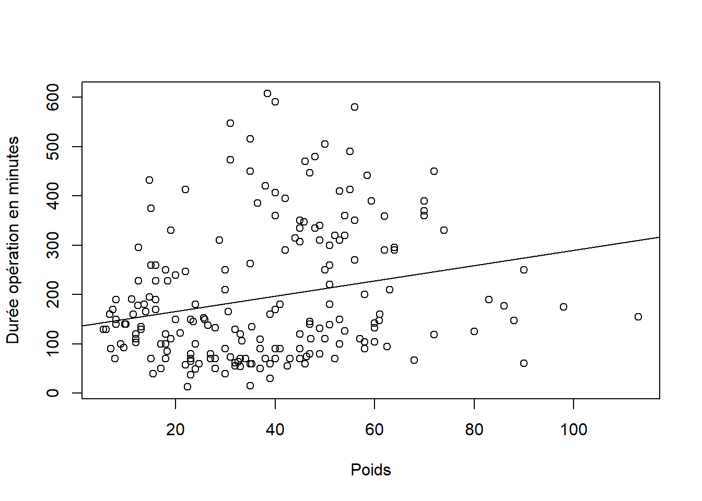
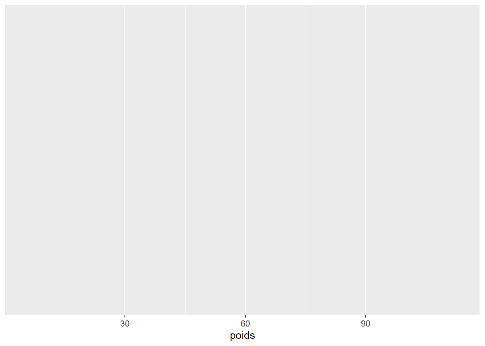
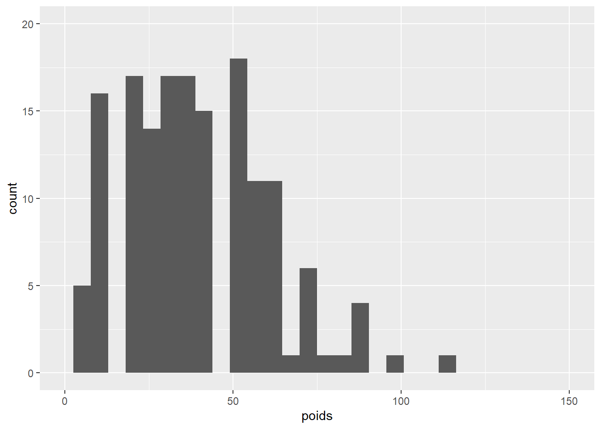
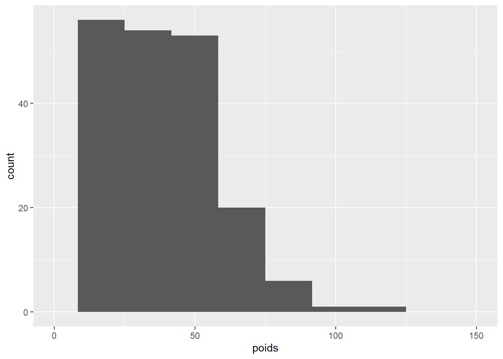
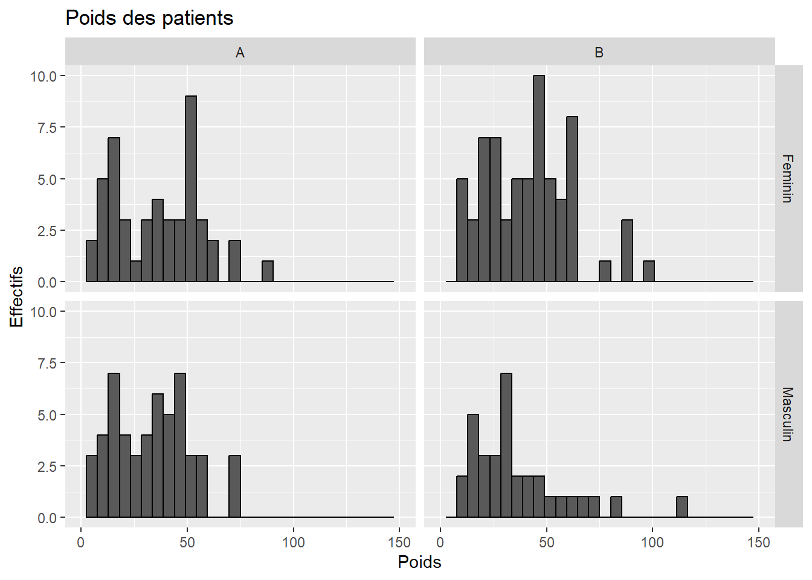
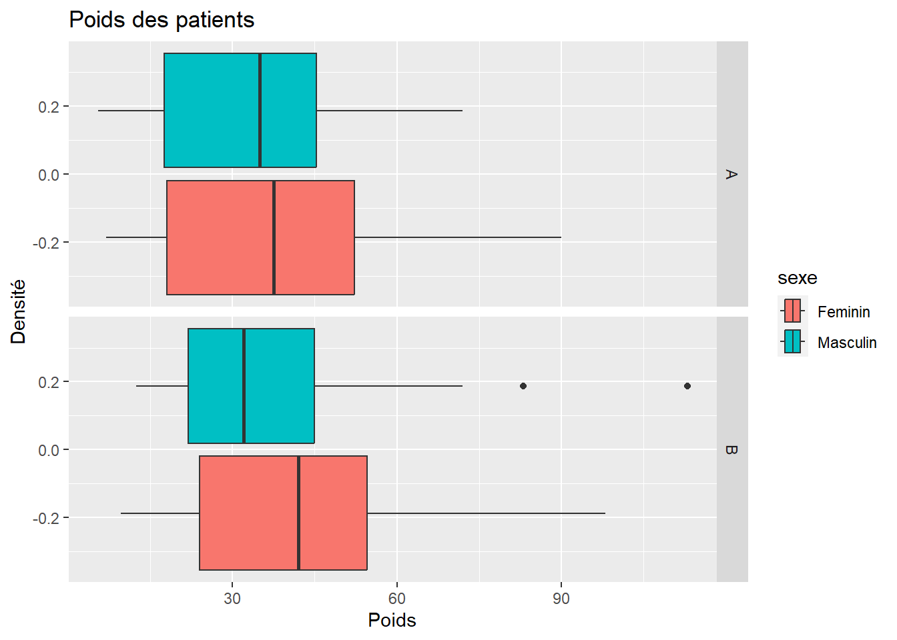
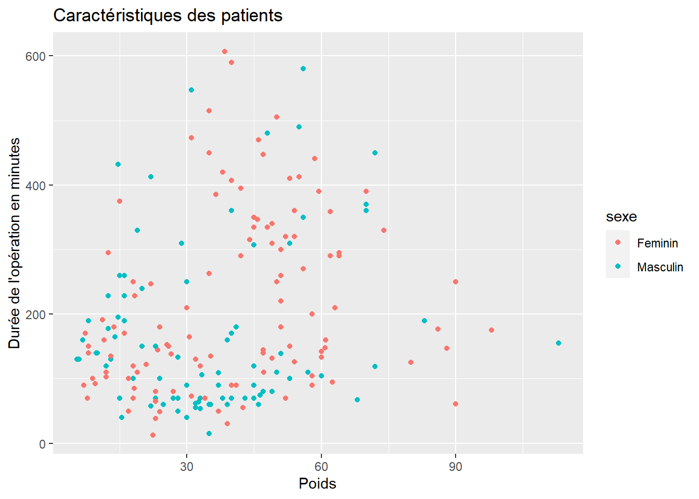

Chapter 6 Graphiques et ggplot
Les graphiques sont une composante de R qui est en partie à l’origine de son succès car on peut de très beaux et ce depuis la création de R.
6.1 Les graphiques de base
Certaines sont très simples d’autres un peu plus compliquées. Nous verrons dans un premier temps les graphiques de base c’est-à-dire qui ne nécessitent pas de charger un package.
6.1.1 Pour les graphiques de chiffres
Les premières fonctions présentées sont les plus usuelles comme les histogrammes.

Ce n’est pas très esthétique. Il y a des arguments aux fonctions qui permettent d’améliorer les choses.
Déjà changer les noms des axes X et y, notamment se débarasser de Frequency qui est un faux ami en français.
 Ensuite le titre :

Pour la couleur, c’est un peu plus compliqué. En effet il y a simple des couleurs qui répondent à leurs mots en anglais, la liste est là.
Mais les couleurs correspondent au codage web des couleurs qui sont en fait des hexadécimaux. Si vous voulez personnaliser plus les couleurs, je vous conseille le paquet RColorBrewer qui possède de jolis (et intelligents) assortiments de couleurs et de la lecture
Ensuite il y a les boxplots ou boîtes à moustache pour les variables continues.
De même on arrange un peu :
 Pour les boxplots on peut faire un peu mieux, par exemple pour segmenter par type
de pathologies.
Pour les boxplots on peut faire un peu mieux, par exemple pour segmenter par type
de pathologies.
On passe la data.frame patient et on précise le nom de la variable qualitative qui doit “séparer” les tracés.
 Le premier argument doit vous paraître un peu abstrait. En fait c’est une formule
sous R. C’est l’équivalent de “patient=CIM2”.
Le premier argument doit vous paraître un peu abstrait. En fait c’est une formule
sous R. C’est l’équivalent de “patient=CIM2”.
A gauche du ~ on place la variable à expliquer et à droite la ou les variables explicatives. Ici on en a une de chaque côté.
Le graphique le plus simple serait le scatterplot. On aurait pu commencer par lui :
Cette fois on a deux arguments qui sont la variable numérique des x en premier et la variable numérique des y en second.

 Qui aurait pu s’écrire :
Qui aurait pu s’écrire :
 Si on veut tracer une ligne pour la régression linéaire, il faut faire appel
à la fonction lm qui calcule la régression et R se charge du reste.
Si on veut tracer une ligne pour la régression linéaire, il faut faire appel
à la fonction lm qui calcule la régression et R se charge du reste.
coefficients <- lm(dureeopmin~poids,data=patient)
plot(patient$poids,patient$dureeopmin,xlab="Poids",ylab="Durée opération en minutes")
abline(coefficients) On voit ici que j’ai appellé abline après le plot. En effet, il est nécessaire de faire un plot, un hist ou une boxplot avant pour que R initialise le graphique notamment le calcul des coordonnées maximales et minimales.
D’ailleurs on peut les spécifier nous mêmes :
coefficients <- lm(dureeopmin~poids,data=patient)
plot(patient$poids,patient$dureeopmin,xlab="Poids",ylab="Durée opération en minutes",
xlim=c(0,150),ylim=c(0,600))
abline(coefficients)
Pour sauvegarder un graphique, on doit le faire avant d’appeler la fonction principale et refermer le fichier avec la commande dev.off:
La dernière fonction à connaître pour les graphiques de base est le barplot.
Il s’agit de représenter des tableaux de contingence, le plus simple étant à une dimension :
On peut lui passer un argument à deux dimensions mais la table devient tout de suite difficile à lire.
## le tidyverse et ggplot
6.1.2 Introduction
Vous pourrez comme précédemment entendre parler des graphiques de base de même que des graphiques lattice mais le choucou du tidyverse c’est ggplot2.
C’est un éco-système de packages qui permet de faire la plupart des graphiques plus simplement et qui est basé sur le paquet gplot2.
Un livre gratuit lui est consacré là et une page en français là
On va reprendre notre grammaire. Il faut saisir que ggplot2 fonctionne par couche. Sur une base, vous additionner des couches qui apporte la personnalisation des graphiques.
6.1.3 La base
Au tout départ, il faut lui passer une data.frame, c’est le passage obligé.
 Ensuite on précise les variables de travail. Pour l’histogramme, on en a qu’une :
Ensuite on précise les variables de travail. Pour l’histogramme, on en a qu’une :

Vous pouvez constater, que le logiciel a calculé et positionner les légendes pour créer un graphique avec poids comme variable des abscisses (horizontal).
On personnalise en demandant un graphique de type histogramme. En additionnant littéralement:
## `stat_bin()` using `bins = 30`. Pick better value with `binwidth`.
Pour modifier les limtes du graphiques, on rajoute :
ggplot(patient,aes(poids))+geom_histogram()+
scale_x_continuous(limits = c(0,150)) +
scale_y_continuous(limits = c(0,20))## `stat_bin()` using `bins = 30`. Pick better value with `binwidth`.## Warning: Removed 4 rows containing missing values (`geom_bar()`).
Si on veut modifier le nombre de barres verticales (la précision de l’histogramme), on précise l’option dans la couche de l’histogramme :
## Warning: Removed 2 rows containing missing values (`geom_bar()`). Pour les titres, c’est pareil, on ajoute des couches :
ggplot(patient,aes(poids))+geom_histogram()+
scale_x_continuous(limits = c(0,150)) +
ggtitle("Poids des patients") +
xlab("Poids") +
ylab("Effectifs")## `stat_bin()` using `bins = 30`. Pick better value with `binwidth`.## Warning: Removed 2 rows containing missing values (`geom_bar()`).On peut ajouter des propriétés esthétiques comme la couleur, par exemple :
ggplot(patient,aes(poids))+geom_histogram(fill ="lightblue", colour = "black")+
scale_x_continuous(limits = c(0,150)) +
ggtitle("Poids des patients") +
xlab("Poids") +
ylab("Effectifs")## `stat_bin()` using `bins = 30`. Pick better value with `binwidth`.## Warning: Removed 2 rows containing missing values (`geom_bar()`).
Là où ggplot2 sort du lot, c’est sa capacité à segmenter et à représenter avec une bonne grammaire graphique
ggplot(patient,aes(poids,fill=sexe))+geom_histogram(color="black")+
scale_x_continuous(limits = c(0,150)) +
ggtitle("Poids des patients") +
xlab("Poids") +
ylab("Effectifs")## `stat_bin()` using `bins = 30`. Pick better value with `binwidth`.## Warning: Removed 4 rows containing missing values (`geom_bar()`).
On a l’ajout de couleurs ou alors deux graphiques avec des unités bien choisies:
ggplot(patient,aes(poids,fill=sexe))+geom_histogram(color="black")+
scale_x_continuous(limits = c(0,150)) +
ggtitle("Poids des patients") +
xlab("Poids") +
ylab("Effectifs") +
facet_grid(sexe ~ .)## `stat_bin()` using `bins = 30`. Pick better value with `binwidth`.## Warning: Removed 4 rows containing missing values (`geom_bar()`).
On a de nouveau une formule. Cette fois, c’est à gauche du ~ les lignes et à droite les colonnes :
ggplot(patient,aes(poids))+geom_histogram(color="black")+
scale_x_continuous(limits = c(0,150)) +
ggtitle("Poids des patients") +
xlab("Poids") +
ylab("Effectifs") +
facet_grid(sexe ~ Hopital)## `stat_bin()` using `bins = 30`. Pick better value with `binwidth`.## Warning: Removed 8 rows containing missing values (`geom_bar()`).
On peut vouloir calculer la densité et non les effectifs dans ce cas :
ggplot(patient,aes(poids))+geom_histogram(aes(y = ..density..),color="black")+
scale_x_continuous(limits = c(0,150)) +
ggtitle("Poids des patients") +
xlab("Poids") +
ylab("Densité") +
facet_grid(sexe ~ Hopital)## Warning: The dot-dot notation (`..density..`) was deprecated in ggplot2 3.4.0.
## ℹ Please use `after_stat(density)` instead.
## This warning is displayed once every 8 hours.
## Call `lifecycle::last_lifecycle_warnings()` to see where this warning was generated.## `stat_bin()` using `bins = 30`. Pick better value with `binwidth`.## Warning: Removed 8 rows containing missing values (`geom_bar()`).
6.1.4 Les autres graphiques
Le boxplot :
ggplot(patient,aes(x=poids,fill=sexe))+geom_boxplot()+
ggtitle("Poids des patients") +
xlab("Poids") +
ylab("Densité") +
facet_grid(Hopital ~ .)
ggplot(patient,aes(x=sexe,y=poids))+geom_boxplot()+
ggtitle("Poids des patients") +
xlab("Poids") +
ylab("Densité") +
facet_grid(Hopital ~ .)
ggplot(patient,aes(poids))+geom_boxplot()+
ggtitle("Poids des patients") +
xlab("Poids") +
ylab("Densité") +
facet_grid(sexe ~ Hopital)
D’où des graphiques en scatterplot comme :
ggplot(patient,aes(x=poids,y=dureeopmin))+geom_point(aes(col=sexe))+
ggtitle("Caractéristiques des patients") +
xlab("Poids") +
ylab("Durée de l'opération en minutes") 
ou en rajoutant plein de trucs :
ggplot(patient,aes(x=poids,y=dureeopmin))+geom_point(aes(col=sexe))+
ggtitle("Caractéristiques des patients") +
xlab("Poids") +
ylab("Durée de l'opération en minutes") +
facet_grid(CIM2 ~ Hopital)
Pour les tableaux de fréquences, on peut faire très simple :

 Là où ggplot2 commence à devenir compliqué, c’est que geom_bar ne va pas
marcher car il faut lui fournir la data.frame avec les statistiques en ligne.
Là où ggplot2 commence à devenir compliqué, c’est que geom_bar ne va pas
marcher car il faut lui fournir la data.frame avec les statistiques en ligne.
Soit :
## Le chargement a nécessité le package : reshape2##
## Attachement du package : 'reshape2'## L'objet suivant est masqué depuis 'package:tidyr':
##
## smiths## sexe CIM2 value
## 1 Feminin 1 20
## 2 Masculin 1 30
## 3 Feminin 2 26
## 4 Masculin 2 24
## 5 Feminin 3 28
## 6 Masculin 3 22
## 7 Feminin 4 41
## 8 Masculin 4 9Pour faire ce tableau, il faut faire appel au package reshape2.
##
## 1 2 3 4
## Feminin 20 26 28 41
## Masculin 30 24 22 9De ce tableau on passe au long en une commande :
Il faut spécifier le nom à donner aux deux variables et spécifier le résultat du croisement des deux variables qui est le nombre d’observations c’est-à-dire le contenu de chaque cellule de tableau.


D’où le graphique :
tableau <- table(patient$Hopital,patient$sexe,patient$CIM2)
long <- melt(tableau,varnames = c("Hopital","sexe","CIM2"),value.name = "value")
ggplot(long,aes(x=CIM2,y=value,fill=sexe))+
geom_bar(position = "dodge",stat="identity")+
facet_grid(Hopital ~ . )
Pour sauvegarder un graphique ggplot2, la syntaxe est différente et surtout on l’appelle une fois que le graphique est terminé, c’est-à-dire en dernier :
Et ainsi de suite…
6.2 Liens
Il y a de nombreuses galleries sur le web avec toutes les possiblités offertes par les graphiques de base comme les graphiques avec ggplot2.
On peut en parcourir ensemble…
tableau <- dcast(patient, UID + sexe ~ Hopital, value.var = "nbechelle")
tableau$poids <- ifelse(!is.na(tableau$A),tableau$A,tableau$B)
ggplot(tableau, aes(x=nbechelle) ) +
geom_density( aes(x = A, y = ..density..), fill="#69b3a2" ) +
geom_label(aes(x=90, y=0.01, label="Hopital A"), color="#69b3a2") +
geom_density( aes(x = B, y = -..density..), fill= "#404080") +
geom_label(aes(x=90,y=-0.01, label="Hopital B"), color="#404080")## Warning: Removed 100 rows containing non-finite values (`stat_density()`).
## Removed 100 rows containing non-finite values (`stat_density()`).